Galería
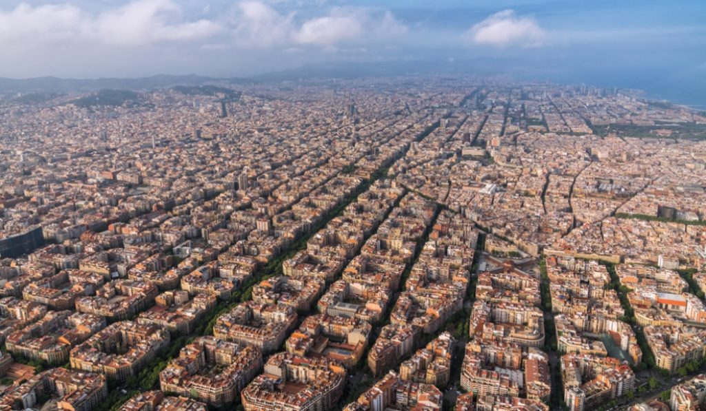
 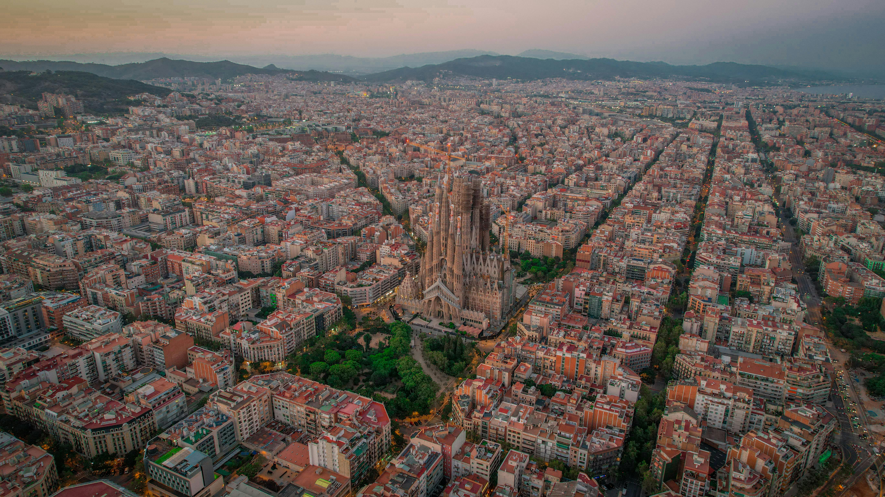
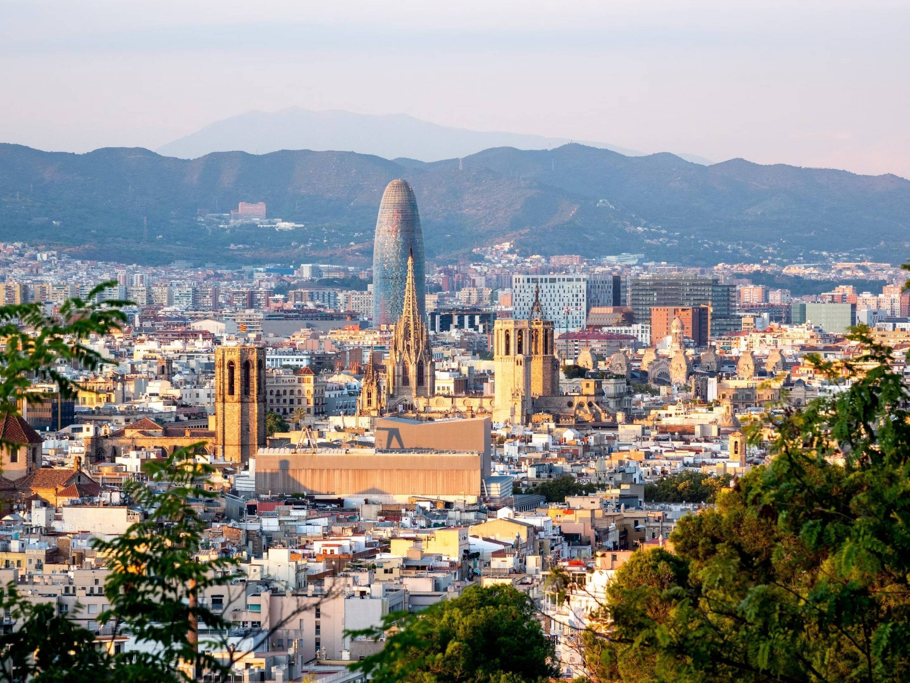
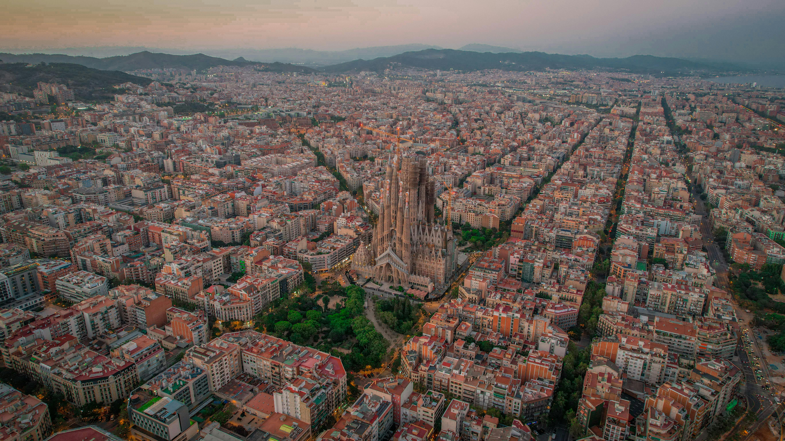
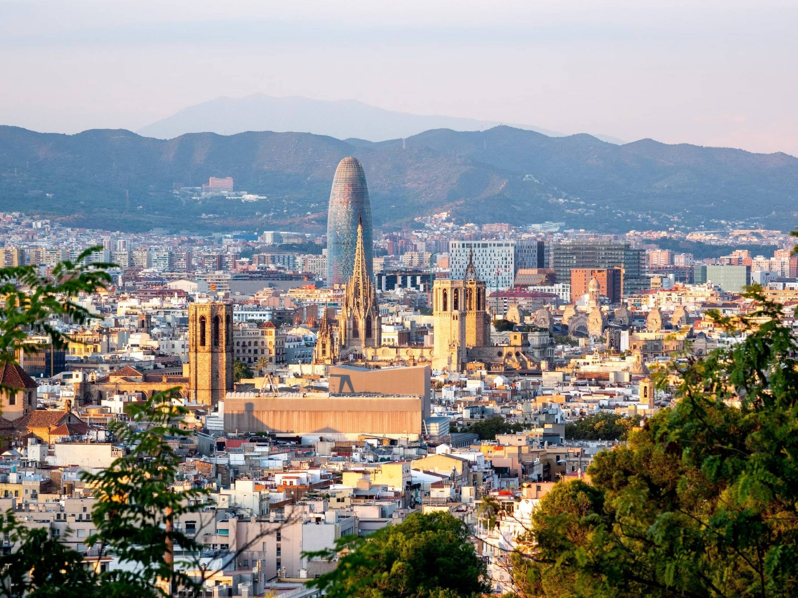
 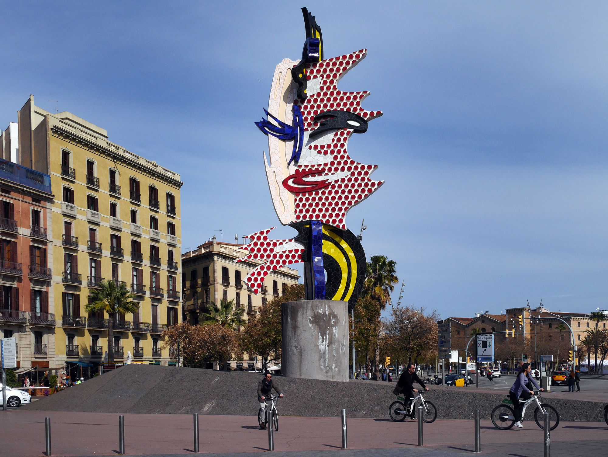
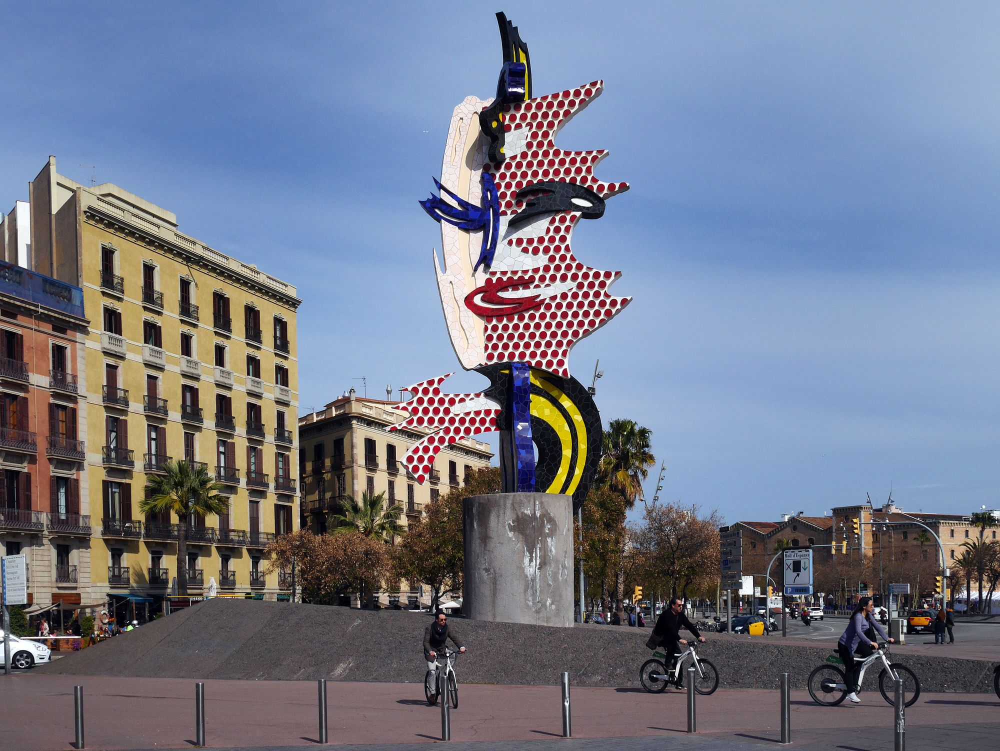
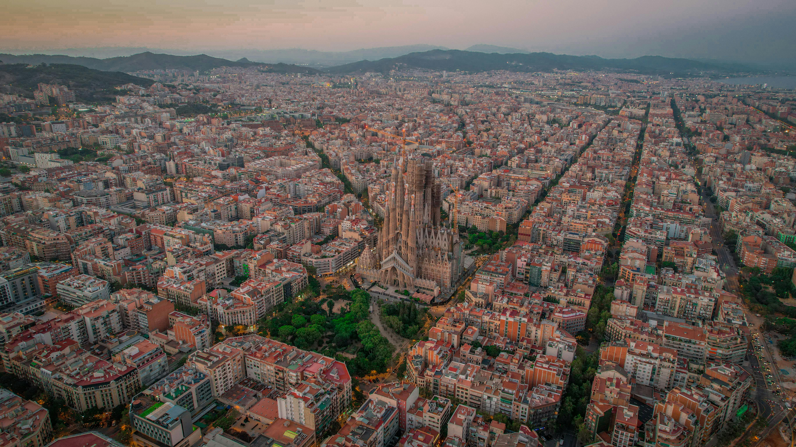
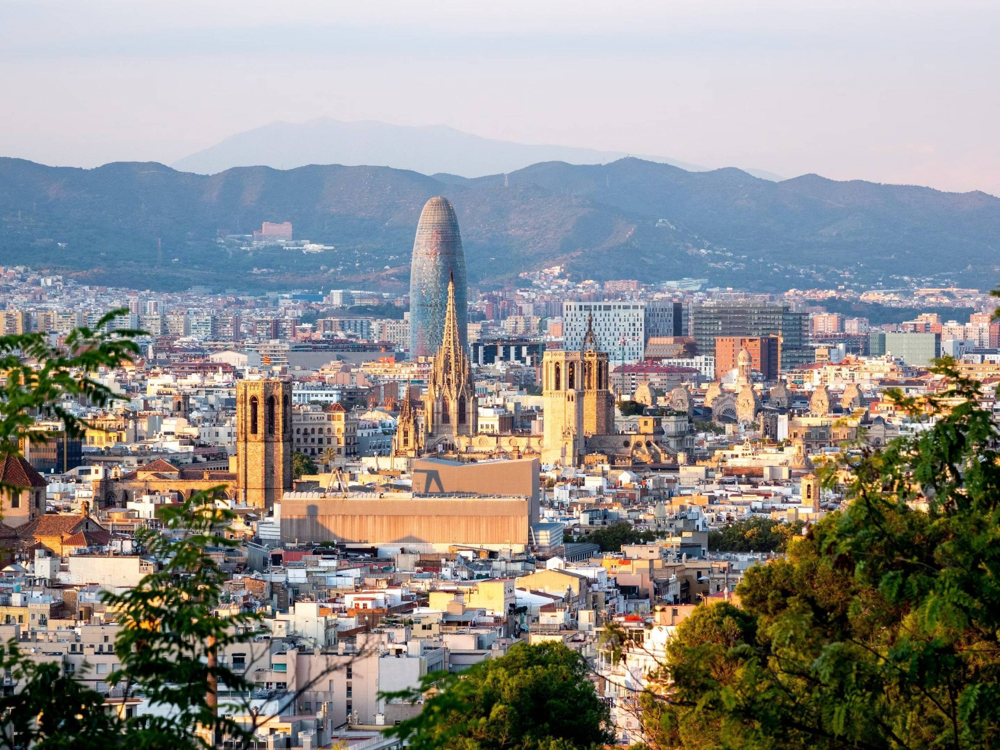
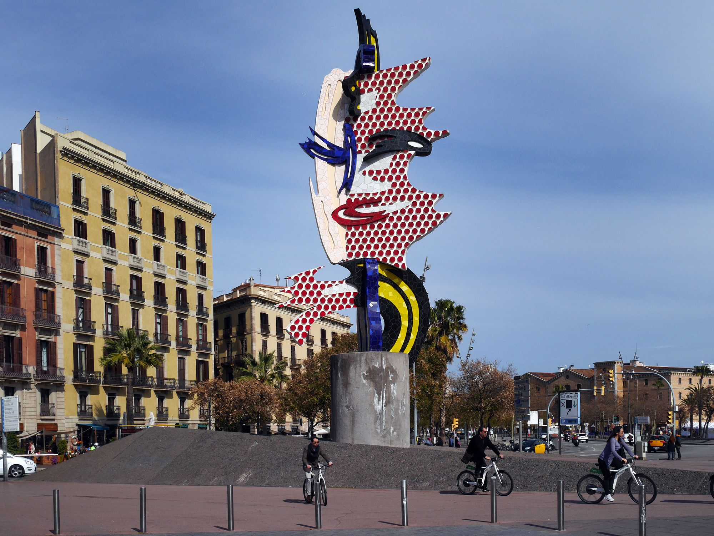
Lugares de interés
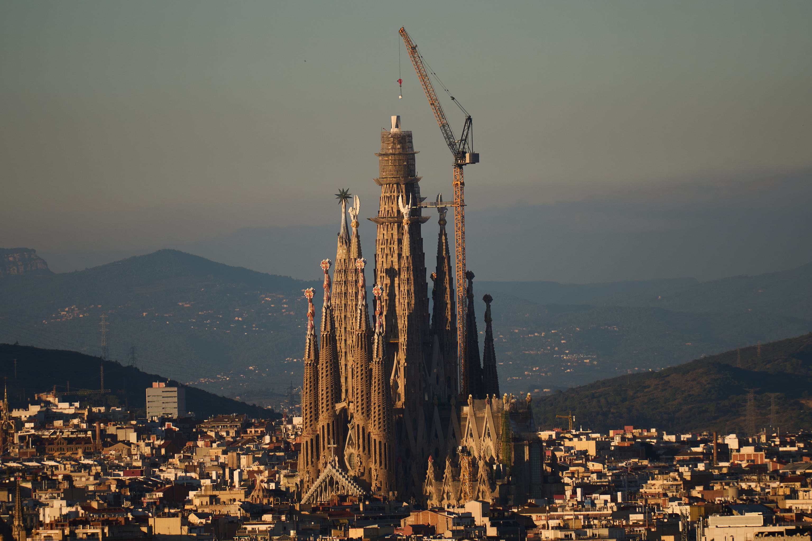
Sagrada Familia
Uno de los monumentos más emblemáticos de la ciudad.

Parque Güell
Parque modernista con vistas espectaculares.

La Rambla
Paseo más famoso de la ciudad.

Barceloneta
Playa urbana muy visitada.
Mapa de la ciudad
Imagenes extra